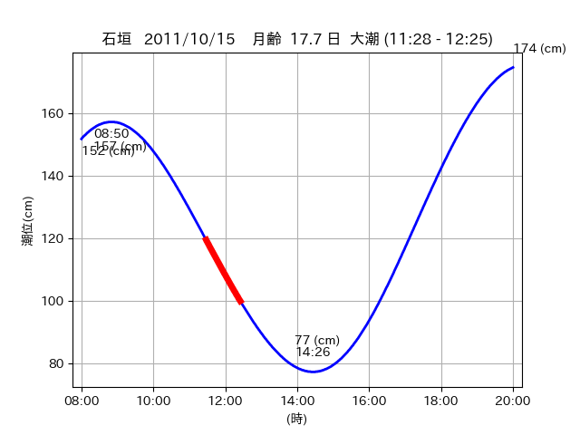

<!DOCTYPE html>
<html>
<head>
    
    <meta http-equiv="content-type" content="text/html; charset=UTF-8" />
    
        <script>
            L_NO_TOUCH = false;
            L_DISABLE_3D = false;
        </script>
    
    <style>html, body {width: 100%;height: 100%;margin: 0;padding: 0;}</style>
    <style>#map {position:absolute;top:0;bottom:0;right:0;left:0;}</style>
    <script src="https://cdn.jsdelivr.net/npm/leaflet@1.9.3/dist/leaflet.js"></script>
    <script src="https://code.jquery.com/jquery-3.7.1.min.js"></script>
    <script src="https://cdn.jsdelivr.net/npm/bootstrap@5.2.2/dist/js/bootstrap.bundle.min.js"></script>
    <script src="https://cdnjs.cloudflare.com/ajax/libs/Leaflet.awesome-markers/2.0.2/leaflet.awesome-markers.js"></script>
    <link rel="stylesheet" href="https://cdn.jsdelivr.net/npm/leaflet@1.9.3/dist/leaflet.css"/>
    <link rel="stylesheet" href="https://cdn.jsdelivr.net/npm/bootstrap@5.2.2/dist/css/bootstrap.min.css"/>
    <link rel="stylesheet" href="https://netdna.bootstrapcdn.com/bootstrap/3.0.0/css/bootstrap-glyphicons.css"/>
    <link rel="stylesheet" href="https://cdn.jsdelivr.net/npm/@fortawesome/fontawesome-free@6.2.0/css/all.min.css"/>
    <link rel="stylesheet" href="https://cdnjs.cloudflare.com/ajax/libs/Leaflet.awesome-markers/2.0.2/leaflet.awesome-markers.css"/>
    <link rel="stylesheet" href="https://cdn.jsdelivr.net/gh/python-visualization/folium/folium/templates/leaflet.awesome.rotate.min.css"/>
    
            <meta name="viewport" content="width=device-width,
                initial-scale=1.0, maximum-scale=1.0, user-scalable=no" />
            <style>
                #map_da120643bcd28f2f35b20665f93b9028 {
                    position: relative;
                    width: 2048.0px;
                    height: 1600.0px;
                    left: 0.0%;
                    top: 0.0%;
                }
                .leaflet-container { font-size: 1rem; }
            </style>
        
</head>
<body>
    
    
            <div class="folium-map" id="map_da120643bcd28f2f35b20665f93b9028" ></div>
        
</body>
<script>
    
    
            var map_da120643bcd28f2f35b20665f93b9028 = L.map(
                "map_da120643bcd28f2f35b20665f93b9028",
                {
                    center: [24.266, 124.153],
                    crs: L.CRS.EPSG3857,
                    ...{
  "zoom": 12,
  "zoomControl": true,
  "preferCanvas": false,
}

                }
            );

            

        
    
            var tile_layer_bc8dd78568b51f996c5194ed746d91cb = L.tileLayer(
                "https://cyberjapandata.gsi.go.jp/xyz/seamlessphoto/{z}/{x}/{y}.jpg",
                {
  "minZoom": 0,
  "maxZoom": 18,
  "maxNativeZoom": 18,
  "noWrap": false,
  "attribution": "\u5730\u7406\u9662\u5730\u56f3",
  "subdomains": "abc",
  "detectRetina": false,
  "tms": false,
  "opacity": 1,
}

            );
        
    
            tile_layer_bc8dd78568b51f996c5194ed746d91cb.addTo(map_da120643bcd28f2f35b20665f93b9028);
        
    
            var marker_000396ab3414952182aefd0cf997151e = L.marker(
                [24.2525, 124.1299],
                {
}
            ).addTo(map_da120643bcd28f2f35b20665f93b9028);
        
    
            var icon_8a0433f997a515cd07d030644a1dc0d0 = L.AwesomeMarkers.icon(
                {
  "markerColor": "orange",
  "iconColor": "white",
  "icon": "info-sign",
  "prefix": "glyphicon",
  "extraClasses": "fa-rotate-0",
}
            );
        
    
        var popup_663347ae3b90925cb2aba9dcf245ed00 = L.popup({
  "maxWidth": "100%",
});

        
            
                var html_eee0e930310841d088ff3dc9bf00d32b = $(`<div id="html_eee0e930310841d088ff3dc9bf00d32b" style="width: 100.0%; height: 100.0%;"><table><tr><td></td></tr><tr><td><center>20111015 No.1 </center></table></td></tr></table</div>`)[0];
                popup_663347ae3b90925cb2aba9dcf245ed00.setContent(html_eee0e930310841d088ff3dc9bf00d32b);
            
        

        marker_000396ab3414952182aefd0cf997151e.bindPopup(popup_663347ae3b90925cb2aba9dcf245ed00)
        ;

        
    
    
                marker_000396ab3414952182aefd0cf997151e.setIcon(icon_8a0433f997a515cd07d030644a1dc0d0);
            
    
            var poly_line_062c6107abb45a30c88753c6e40e29b3 = L.polyline(
                [[24.2525, 124.1299], [24.2487, 124.1215]],
                {"bubblingMouseEvents": true, "color": "#00FFFF", "dashArray": null, "dashOffset": null, "fill": false, "fillColor": "#00FFFF", "fillOpacity": 0.2, "fillRule": "evenodd", "lineCap": "round", "lineJoin": "round", "noClip": false, "opacity": 1.0, "smoothFactor": 1.0, "stroke": true, "weight": 3}
            ).addTo(map_da120643bcd28f2f35b20665f93b9028);
        
    
            var marker_2dcbea038dcaaa813375ef692b3b5560 = L.marker(
                [24.2591, 124.146],
                {
}
            ).addTo(map_da120643bcd28f2f35b20665f93b9028);
        
    
            var icon_a857e5c28900f9d43f70cec7d003d1b3 = L.AwesomeMarkers.icon(
                {
  "markerColor": "orange",
  "iconColor": "white",
  "icon": "info-sign",
  "prefix": "glyphicon",
  "extraClasses": "fa-rotate-0",
}
            );
        
    
        var popup_63859d4bf198592bebf43feed33d87a7 = L.popup({
  "maxWidth": "100%",
});

        
            
                var html_014288fbc456f426492eb2b7c92376b4 = $(`<div id="html_014288fbc456f426492eb2b7c92376b4" style="width: 100.0%; height: 100.0%;"><table><tr><td></td></tr><tr><td><center>20111015 No.2 </center></table></td></tr></table</div>`)[0];
                popup_63859d4bf198592bebf43feed33d87a7.setContent(html_014288fbc456f426492eb2b7c92376b4);
            
        

        marker_2dcbea038dcaaa813375ef692b3b5560.bindPopup(popup_63859d4bf198592bebf43feed33d87a7)
        ;

        
    
    
                marker_2dcbea038dcaaa813375ef692b3b5560.setIcon(icon_a857e5c28900f9d43f70cec7d003d1b3);
            
    
            var poly_line_8e08f9f65d9bb64a4c2645c7cbcbc077 = L.polyline(
                [[24.2591, 124.146], [24.272, 124.1593]],
                {"bubblingMouseEvents": true, "color": "#FF00FF", "dashArray": null, "dashOffset": null, "fill": false, "fillColor": "#FF00FF", "fillOpacity": 0.2, "fillRule": "evenodd", "lineCap": "round", "lineJoin": "round", "noClip": false, "opacity": 1.0, "smoothFactor": 1.0, "stroke": true, "weight": 3}
            ).addTo(map_da120643bcd28f2f35b20665f93b9028);
        
</script>
</html>